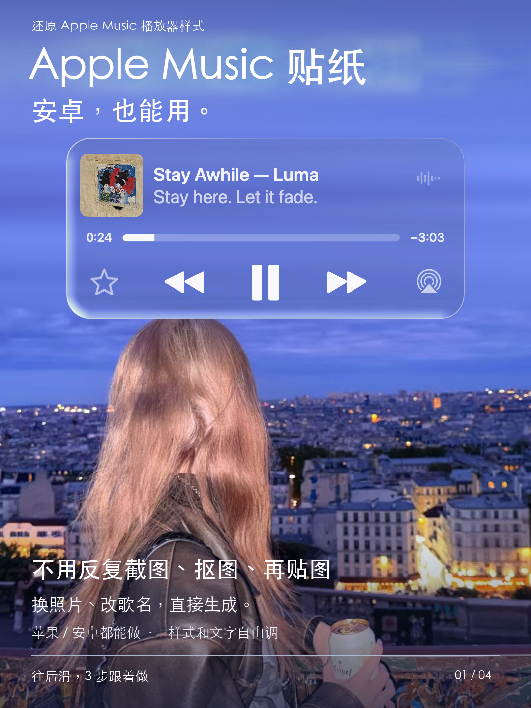
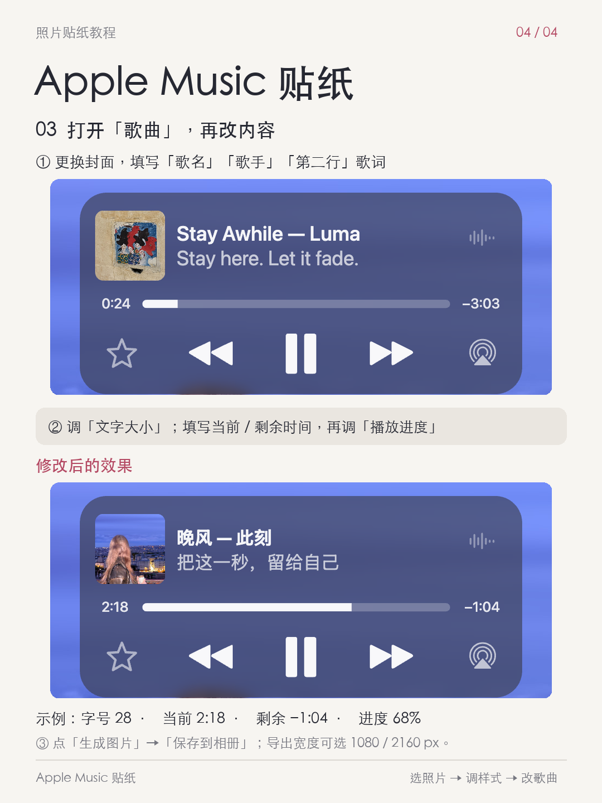

一个面向照片编辑场景的静态播放器贴纸工具。用户可上传照片、编辑歌曲信息和播放器样式，并直接导出 PNG 图片。
后台显示，截至 2026 年 9 月 20 日，Apple Music 贴纸已有 6,458 人使用。
用户想在照片里加入 Apple Music 风格播放器，传统流程需要截图、抠图、再进入修图工具调整。
把照片、歌曲信息、播放器材质和图层关系收敛在同一个可编辑画布内，完成后直接导出。
照片缩放、移动、适配方式；画布比例、背景图与多图拼贴。
歌词、进度、封面、材质、配色、尺寸、透明度均可编辑。
毛玻璃与液态玻璃效果；橡皮擦支持人物前景、撤销、重做与恢复。
桌面拖拽、移动端手势；全程本地处理图片，无后端依赖。


说明：本项目为非官方 Apple Music 风格视觉练习与照片编辑工具，与 Apple Inc. 或 Apple Music 无关联、未获其认可。